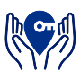

The VolunKey App
Ready to make a difference in your community? Join Volunteer Connect and find meaningful opportunities to give back, support causes you care about, and create a positive impact—one action at a time!
Have a passion for making a difference? Volunteer Connect empowers you to turn your compassion into action! Whether you're looking to give back, organize eventsor track your impact, we make it easy to connect with opportunities that create realchange in your community.
Comprehensive Volunteer Hub - Find, apply, and manage volunteer opportunities effortlessly.
Organizer-Friendly - Simplifies event coordination, application approvals, and scheduling.
Inclusive & Action-Oriented - Designed for volunteers, organizations, and civic leaders to collaborate seamlessly.
Progress Recognition - Tracks volunteer contributions and provides certificates and badges for achievements.